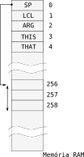
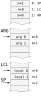
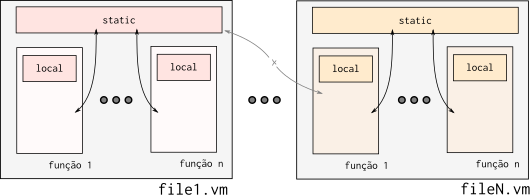
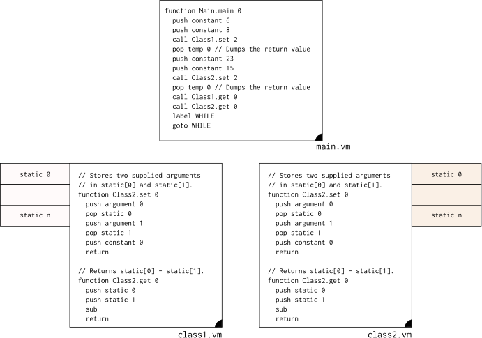
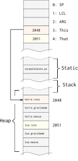

VM - Memória
Para a máquina virtual funcionar corretamente devemos agora definir regiões de memória que serviram para aplicações específicas, tal como armazenar: o topo da pilha (SP, Stack Pointer), os locais dos parâmetros passados na chamada de função (ARG, argument), os endereços das variáveis locais de uma função (LCL, local) ...
A seguir um resumo dos endereços de memória e suas funções:
| Endereço (RAM) | Símbolo | Nome | Uso |
|---|---|---|---|
| 0 | SP | Stack Pointer | Ponteiro para o topo da pilha |
| 1 | LCL | Local | Ponteiro para a base das variáveis de um função |
| 2 | ARG | Argument | Ponteiro para a base dos argumentos de uma função |
| 3 | THIS | This | Ponteiro para a base do segmento this |
| 4 | THAT | That | Ponteiro para a base do segmento that |
| 5..12 | Temp | Temporary | Endereços para armazenar variáveis temporárias |
Além dos endereços específicos (que possuem papéis especiais), devemos também definir regiões da memória que serão utilizadas para armazenar tipos de dados específicos, são essas :
| Endereço (RAM) | Nome | Uso |
|---|---|---|
| 16-255 | Static | Variáveis estáticas (acessíveis por todas as funções) |
| 256-2047 | Stack | Pilha utilizada pela VM (stack pointer) |
| 2048-16383 | Heap | Usada para armazenar objetos e vetores |
| 16384- | I/O | Periféricos mapeados em memória |
Vamos detalhar um pouco de cada item descrito nesse resumo.
Stack
A stack é a região de memória utilizada pela VM para armazenar valores e realizar operações, funciona como uma forma de abstração do hardware, já que agora toda manipulação de dados acontece na Stack e não mais nos registradores. É claro que essa manipulação influência nos registradores do hardware, mas o programador não mais precisa ter todo o conhecimento do hardware nas operações. Por exemplo a operação :
push constant 5
push constant 3
add
Adiciona o valor 5 e o 3 para o topo da pilha e os soma, resultando em um único valor : 8. Notem que para essa operação ser realizada no hardware do Z01 tivemos que usar os registradores para tornar a operação viável, porém isso não é mais visível do programa VM. Nesse camada de software não interessa mais se o hardware possui 2, 3, ... N registradores o resultado da operação será a mesma.
Teremos 8 no topo da pilha. O hardware vai influenciar o VMTranslator que deve traduzir a linguagem de máquina virtual por pilha para a linguagem Assembly, o número de registradores pode influenciar a performance do computador mas não irá mudar o conceito de pilha.
A stack é utilizada também para armazenar os valores passados na chamada de função e também para armazenar o resultado (return) de uma função.
Stack Pointer
É um ponteiro que indica a onde está o endereço do topo da pilha, como a pilha cresce e diminui dinamicamente (conforme os push, pops e operações) necessitamos armazenar em algum local o endereço do topo da pilha, conforme figura a seguir :

Stack Overflow
Agora fica mais claro o significado do site stack overflow ? Indica o estouro da pilha. Imagine a situação na qual só colocamos dados na pilha e nunca tiramos (pop, em algum momento a pilha irá passar seu valor máximo, que no nosso caso é : 2047 - 256 = 1791 endereços e começará a escrever na região reservada para o Heap, corrompendo os dados que estavam ali salvos).
Funções
Os ponteiros LCL e ARG são utilizados somente na execução de uma função, o ARG indica o endereço da stack na qual os parâmetros que serão passados para a função estão salvos e o LCL é indicado para apontar para o endereço na pilha utilizado para armazenar variáveis locais.
O fluxo de chamada de função, de forma simplificada é:
- Coloca na pilha os argumentos que ser passado para a função
- a quantidade varia conforme a demanda da função
- Chama a função (call)
- Aloca na pilha os endereços de memória para armazenar os locals
- Atualiza os ponteiros : SP, LCL, ARG
O fluxo de chamada de função (call) é um pouco complexo, pois demanda que salvemos algumas informações da pilha antes de executarmos a função (precisamos conseguir após a execução da função retornar para um estado similar antes da execução), isto é conhecido como salvar contexto (antes da execução da função) e restaurar contexto (após da execução da função). Para isso é salvo na pilha:
- Endereço de retorno
LCL(antes da chamada de função)ARG(antes da chamada de função)This(antes da chamada de função)That(antes da chamada de função)
LCL - Local
Local indica o endereço na pilha na qual foi alocado para as variáveis locais de uma função, a quantidade de endereços alocados varia conforme a declaração da função, que pode possuir zero ou mais variáveis temporárias.
Veja como fica um exemplo em Java :
void example(int a, int b){
int aux0;
int aux1;
aux0 = a;
aux1 = b;
}
Note que essa função possui duas variáveis locais : aux0, aux1, que são visíveis somente dentro do escopo da função, essas variáveis são alocadas quando a função é chamada e desalocada quando a função retorna. Essas variáveis (aux0, aux1) servem como variáveis locais da função, e são salvas na stack, como a ilustração a seguir:

O exemplo em Java anteriormente seria traduzido para a linguagem VM (de forma imediata) na seguinte maneira :
function example 2
push argument 0 // coloca na pilha o valor a
pop local 0 // aux0 = a
push argument 1 // coloca na pilha o valor b
pop local 1 // aux1 = b
Note que o que define local 0 e local 1 é a ordem na qual as variáveis foram declaradas, como a variável aux0 foi declarada primeiro, ela é alocada no local 0.
O LCL aponta apenas para o endereço do primeiro local, os demais são inferidos da seguinte maneira:
push local n
Tip
Endereço local n = LCL + n
ARG - Argumento
O ponteiro ARG indica a onde na pilha estão salvos os argumentos que a função pode acessar, e segue a mesma lógica do LCL, onde o ARG aponta para o primeiro argumento e o endereço dos demais são inferidos com base no endereço do primeiro.
Tip
Endereço argument n = ARG + n
Static variables
É a região da memória utilizada para armazenar variáveis compartilhadas entre o mesmo arquivo .vm, conforme figura a seguir :

A static não é visível entre diferentes arquivos .vm, deixando as variáveis limitadas a um escopo. O static será utilizado para armazenar as variáveis estáticas de uma determinada classe. Exemplo de acesso ao static:
O exemplo a seguir demonstra duas classes (class1.vm e class2.vm) sendo utilizadas com os seus respectivos stacks. Nesse exemplo, a função main inicializa o static da classe 1 em : static[0] = 6, static[1] = 8 e o static ca classe 2 em : static[0] = 23, static[0] = 15.

Isso será bastante utilizado para fazer a implementação da estrutura a seguir :
public class class1 {
static int valor0; // alocado no static 0
static int valor1; // alocado no static 1
public void set(int var1, va2){
valor0 = var1;
valor1 = var2;
}
public void get(void){
return(valor0-valor1);
}
Note
As variáveis estáticas são compartilhadas entre os objetos inicializados a partir da mesma classe, alocando assim apenas um slot de memória para todos os objetos criados a partir dessa classe ^1.
HEAP
O HEAP é a região de memória a ser utilizada para armazenamento objetos e vetores, um objeto será construído a partir de uma classe e compartilhará as mesma variáveis estáticas mas não as mesmas variáveis locais ao objeto. Vamos tomar como ponto de partida o exemplo a seguir que inicializa dois objetos (terra e lua) do tipo corpoCeleste :
void main(){
corpoCeleste terra = new corpoCeletes();
terra.setMassa(1200);
corpoCeleste lua = new corpoCeleste();
lua.setMassa(32);
lua.pi = 314;
}
public class corpoCeleste(){
static int pi;
int raio ;
int gravidade;
int massa;
void getMassa(){
return(this.massa);
}
void setMassa(int m){
this.massa = m;
}
}
Esse exemplo aloca no Heap três endereços em locais diferentes para cada objeto criado do tipo corpoCeleste, porém a variável pi, que é estática é comum a todos os objetos criados a partir da mesma classe. A figura a seguir ilustra como essas variáveis seriam alocadas em memória.

This
This é o ponteiro que referência o próprio objeto: objeto na qual o método ou construtor está sendo chamado. No caso da chamada do método getMassa() da classe corpoCeleste, o ponteiro This será ajustado para apontar para o objeto na qual o método foi chamado. O fluxo da máquina virtual será o seguinte :
- Ajusta o this para apontar para o início do HEAP pertencente ao objeto
- chama a função getMassa do arquivo corpoCeleste.vm
That
O ponteiro That é utilizado para referenciar outro objeto, utilizado no exemplo a seguir:
Método objeto Celeste:
void compareMassa(corpoCeleste outro){
if(this.massa == outro.massa){
return(True);
}
else{
return(False);
}
}
Código principal:
void main(){
...
rtn = terra.compareMassa(lua);
}
Nesse exemplo, incluimos um novo método (compareMass) na classe corpoCeleste, esse novo método compara a massa de um outro objeto com a do próprio objeto, retornando verdadeiro ou falso dependendo do resultado.
Como esse código seria traduzido para VM? O objeto em questão será acessado utilizando o ponteiro this e o objeto a ser comparado será acessado via o that. O compilador da linguagem de alto nível para VM será responsável por alocar os objetos nos endereços certos.
function main 0
...
push constant 2048 // endereço objeto terra
push constant 2051 // endereço objeto lua
call cortpoCeleste.compare mass 2
function corpoCeleste.compareMass 0
push argument 0
pop pointer 0 // atualiza endereço this
push argument 1
pop pointer 1 // atualiza endereço that
push this 2 // this 0 = gravidade; this 1 = raio; this 2 = massa
push that 2 // that 0 = gravidade; this 1 = raio; this 2 = massa
eq
return
Note que quando o método for chamado (no caso da vm o método será traduzido para uma função), os ponteiros this e that devem ser passados via a chamada da função, e no começo da função atualizado os endereços RAM[3] - This e RAM[4] - That.